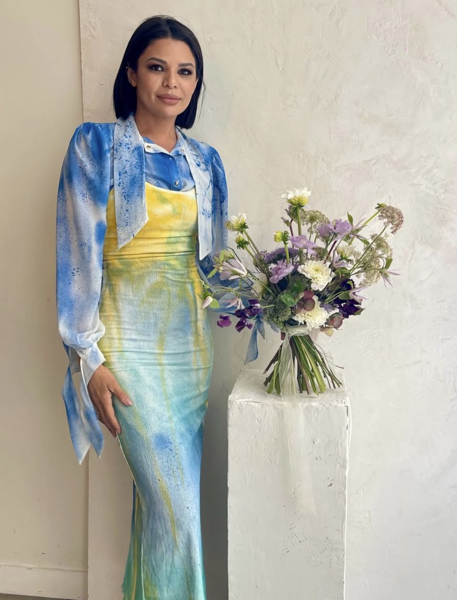
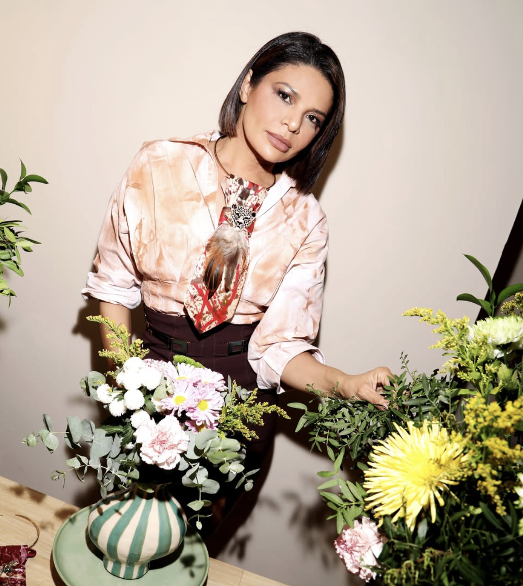
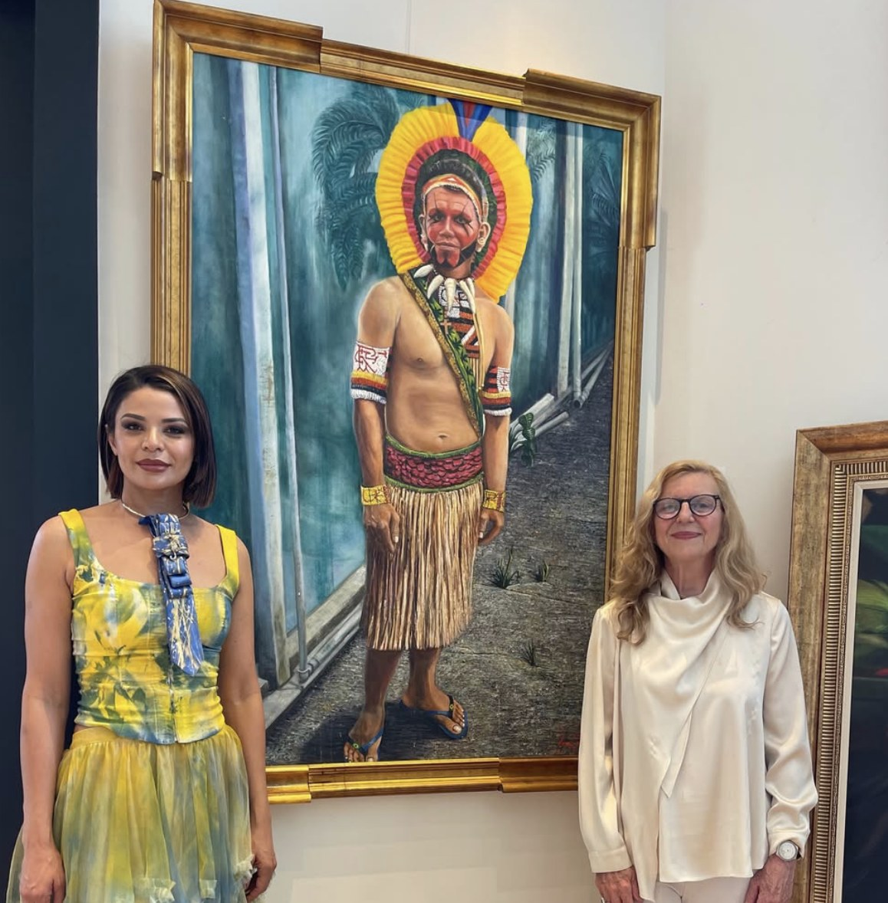

Tatiane Dos Santos es una artista plástica brasileña de raíces indígenas, afincada en Madrid desde hace casi dos décadas. Modelo y creadora multidisciplinar, ha hecho de la pintura el lugar donde se encuentran su historia, su tierra y la naturaleza que la vio crecer.
Su obra nace de una conexión profunda con lo ancestral: minerales, barro, color y luna se convierten en materia y en símbolo. Cada pieza es una forma de volver al origen y, a la vez, de transformarlo.
«Mi arte nace del barro, la naturaleza y una conexión profunda con mis raíces.»
Tatiane Dos Santos · El Diario de MadridUn camino que empezó con pinceles prohibidos y hoy cruza fronteras.
Desde niña pintaba en abstracto, pero en casa su arte no se valoraba: su abuela llegó a prohibirle pintar. Aquella semilla, sin embargo, nunca dejó de crecer.
Se instala en Madrid, donde desarrolla su carrera como modelo y creadora, sin perder el vínculo con Brasil y con su herencia indígena.
Mientras restauraba muebles durante el confinamiento, vuelve a pintar. Lo que empezó como un refugio se convierte en su vocación.
Se incorpora al proyecto artístico de Fidelitas, que conecta artistas con coleccionistas de todo el mundo. Entre sus ventas destacadas, una obra subastada a Olivia de Borbón.
Expone junto a la artista Elena Kiah Santi, en muestras donde dialogan dos miradas sobre la naturaleza y la materia.
Con propuestas para exponer en Portugal y México, y la mirada puesta también en Italia.
Materia, naturaleza y transformación: las tres claves de su obra.
Spray, alcohol, acrílicos y pigmentos minerales se combinan en capas y texturas. Una evolución desde sus primeros acrílicos básicos.
Minerales, barro, color y luna: elementos que conectan su obra con la tierra y con sus ancestros.
"Del barro al oro", una de sus obras más representativas: una metáfora de la transformación personal y artística.
Lo que Tatiane ha contado sobre su arte, sus raíces y su trayectoria en medios e instituciones.
Tatiane repasa sus raíces brasileñas e indígenas, cómo la pandemia la devolvió a la pintura, el significado de su obra Do barro ao ouro, su unión a Fidelitas Arte y sus planes de exponer en Portugal, México e Italia.
«Una búsqueda de equilibrio entre el barro y el oro, entre lo ancestral y lo contemporáneo.»Leer entrevista
La Fundación Zaballos presenta Otimista, una obra de Tatiane Dos Santos en técnica mixta sobre lienzo, donada a la fundación a través de Fidelitas Arte.
Ver la obraEn esta entrevista exclusiva, Tatiane cuenta cómo empezó: de promotora de exposiciones en España a la restauración de muebles y las clases de pintura. Habla de la naturaleza como inspiración, de su obra más especial, Viagem, y del color como emoción.
«Los colores desbordan emociones, alegría y confianza.»Traducido del portuguésLeer entrevista (en portugués)
